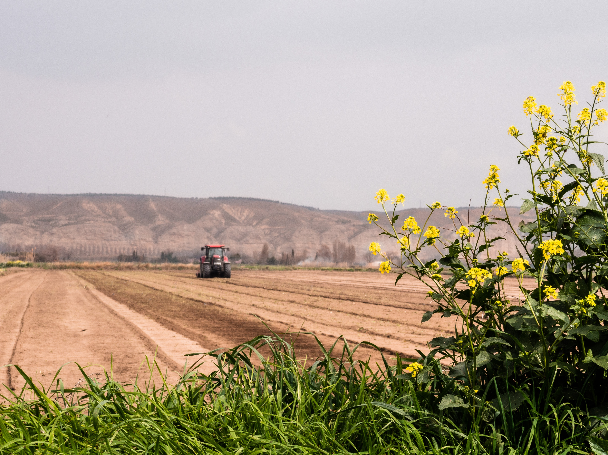
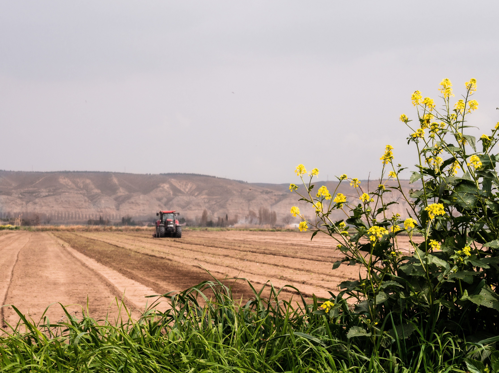
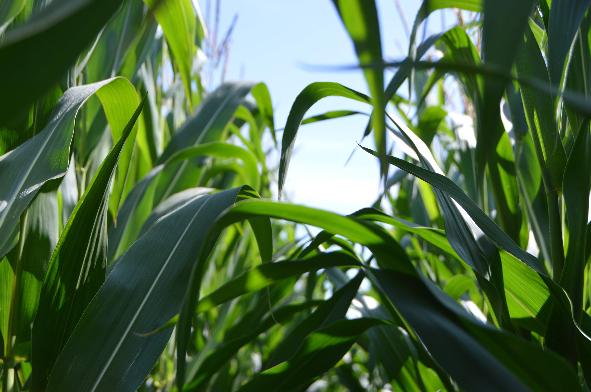
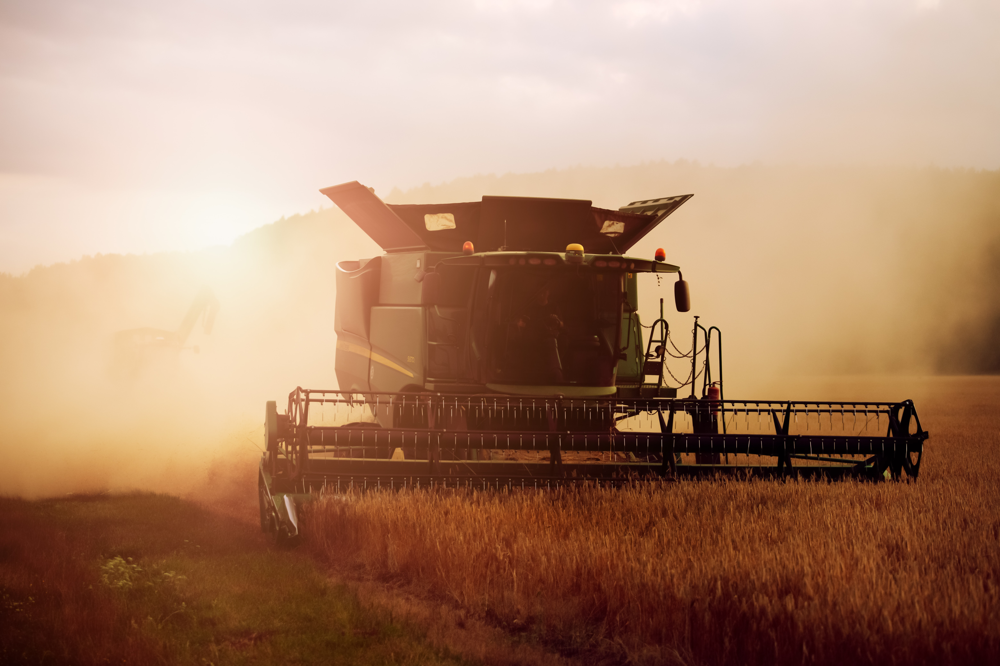

História e Evolução:
O agronegócio não é uma criação recente, mas sua forma moderna e altamente eficiente é resultado de um longo processo de evolução. No início da história da humanidade, a agricultura e a criação de animais eram as principais fontes de subsistência das sociedades. Com o passar dos anos, a revolução agrícola trouxe avanços tecnológicos que permitiram o aumento da produtividade, como o uso de máquinas agrícolas, fertilizantes, pesticidas e técnicas de melhoramento genético.

Contribuições para a Economia:
O agronegócio é um dos principais pilares econômicos de muitos países, contribuindo significativamente para o Produto Interno Bruto (PIB) e para a geração de empregos. Além disso, é uma fonte crucial de divisas para nações exportadoras, já que muitos produtos agrícolas e pecuários são comercializados internacionalmente. Isso também fortalece a balança comercial de diversos países.
Segurança Alimentar:
A produção agrícola e pecuária é fundamental para garantir a segurança alimentar da população mundial. O agronegócio é responsável por fornecer uma ampla variedade de alimentos, desde grãos básicos como arroz, trigo e milho até proteínas como carne, leite e ovos. A tecnologia aplicada ao agronegócio tem permitido aumentar a produção para atender à crescente demanda global por alimentos.
Sustentabilidade e Desafios Ambientais:
Apesar dos benefícios econômicos e sociais do agronegócio, também existem preocupações ambientais associadas a essa atividade. O uso excessivo de agroquímicos, o desmatamento e a degradação do solo podem causar impactos negativos no meio ambiente. Por isso, a busca por práticas agrícolas sustentáveis, como a agricultura de conservação e a agroecologia, tem se tornado cada vez mais importante.

Tecnologia e Inovação:
A revolução digital também alcançou o agronegócio, dando origem ao conceito de "agricultura 4.0". A tecnologia está sendo usada para melhorar a eficiência na produção, por meio de sistemas de monitoramento remoto, análise de dados, automação de processos e uso de drones para mapeamento de áreas cultivadas. Isso não apenas aumenta a produtividade, mas também reduz o impacto ambiental.
Desafios Sociais e Trabalhistas:
No contexto do agronegócio, questões relacionadas aos direitos trabalhistas e às condições de trabalho também surgem. Muitos trabalhadores rurais enfrentam condições precárias, baixos salários e falta de acesso a serviços básicos. As discussões sobre políticas de trabalho justo e equitativo no setor agrícola são essenciais para garantir a dignidade desses trabalhadores.
Desafios Sociais e Trabalhistas:
O agronegócio é fortemente influenciado pela globalização. Os produtos agrícolas e pecuários são comercializados em escala global, o que cria oportunidades, mas também expõe os produtores a volatilidades nos preços e nas condições de mercado. A abertura de mercados internacionais pode ser um impulso econômico, mas também requer adaptação a regulamentações e padrões internacionais.

O Futuro do Agronegócio:
O agronegócio é fortemente influenciado pela globalização. Os produtos agrícolas e pecuários são comercializados em escala global, o que cria oportunidades, mas também expõe os produtores a volatilidades nos preços e nas condições de mercado. A abertura de mercados internacionais pode ser um impulso econômico, mas também requer adaptação a regulamentações e padrões internacionais.

Conclusão:
O agronegócio é uma atividade multifacetada que desempenha um papel central na alimentação, economia e desenvolvimento sustentável. A interseção entre produção agrícola, tecnologia, economia, meio ambiente e sociedade torna o agronegócio uma área complexa, repleta de desafios e oportunidades. À medida que avançamos no século XXI, encontrar um equilíbrio entre produção eficiente e práticas sustentáveis será crucial para garantir que o agronegócio continue a sustentar vidas e economias por meio da terra.